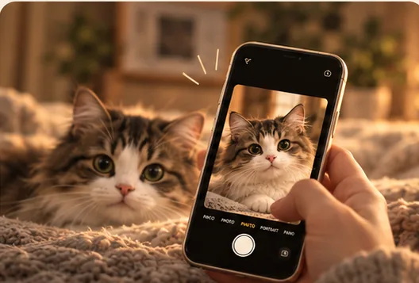
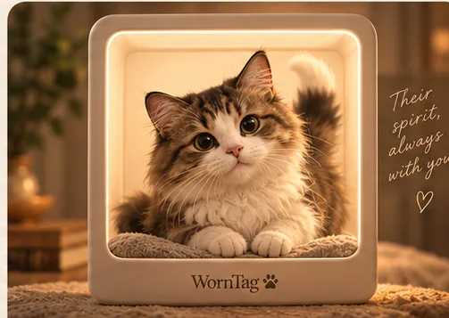
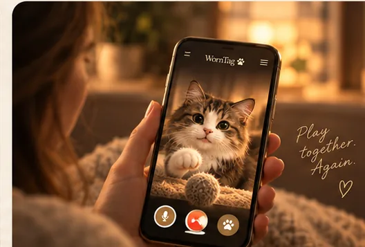

01
Start with a photo
A clear view of your pet’s face and coat gives the experience a familiar starting point. Uploads are not available on this website.
The idea, clearly
WornTag is in development. The intention is to create a personal digital companion inspired by a pet photo, with simple interactions that make the experience feel more present than a still image.
The experience we are working toward

A clear view of your pet’s face and coat gives the experience a familiar starting point. Uploads are not available on this website.

The aim is a digital likeness guided by the markings, colours and small details you recognise.

The experience is being explored around gentle moments such as calling, play and seeing the companion move.
These illustrations are design concepts, not screenshots of a finished app. Features and appearance may change before release.
WornTag is not presented as an AI tool or a promise of perfect reconstruction. It is a developing idea for turning the familiar appearance of a particular dog or cat into an interactive digital keepsake. A generated likeness can be imperfect; the real animal and the memories around a photograph remain yours.
WornTag does not bring a pet back to life. A digital character does not contain an animal’s consciousness, memories, feelings or personality. We want the experience to feel warm without implying otherwise, and to be useful for people celebrating a pet today or revisiting an old photograph.
The app is not available to download, and this website does not accept pet photos. Before any upload feature launches, WornTag will publish clear information about what happens to an image, how long it is kept, and how to request deletion. Device support will be confirmed before a beta opens; pricing will be published before anyone is asked to pay.